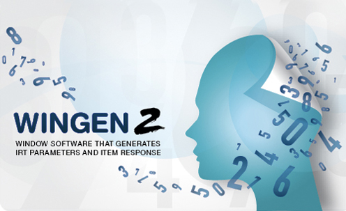
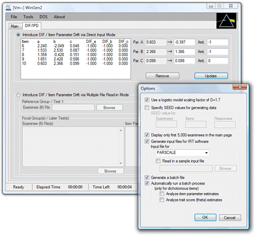
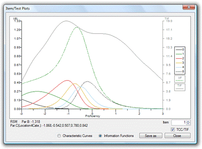

|
|
| Kyung (Chris) T. Han |
Preferred Citation Han, K. T. (2007). WinGen: Windows software that generates IRT parameters and item responses. Applied Psychological Measurement, 31(5), 457-459. Han, K. T., & Hambleton, R. K. (2007). User's Manual: WinGen (Center for Educational Assessment Report No. 642). Amherst, MA: University of Massachusetts, School of Education. |

About WinGen
Item response theory (IRT) is a popular and valuable framework for modeling educational and psychological test data, due to attractive properties such as the invariance of item and examinee parameter values (when IRT models can be found that fit the test data) and item parameters and examinee parameters being reported on a common scale. However, IRT models often rely on or are based on two strict assumptions, unidimensionality and the mathematical form of the item characteristic functions, and violations of these assumptions can produce serious negative consequences to the measurement process. One way of evaluating the impact of violating these two critical assumptions, as well as studying factors such as the impact of choice of models, examinee sample sizes, the shape of ability distributions, and test length, and many other factors, is via Monte Carlo simulation studies.
The essential part of Monte Carlo studies is simulating examinee item response data given true model parameter values. A number of computer programs for simulating IRT data have been developed since the early 1970s. However, most of them were developed in the DOS environment (e.g., DATAGEN, Hambleton & Rovinelli, 1973, GENIRV, Baker, 1989, and RESGEN, Muraki, 1992). As a result, these programs are limited today because of inherent problems in DOS: (1) slow performance speed (16-bit), (2) limited usable system resources, (3) incompatibility with recent 32-bit Windows-based OSs, and (4) not a user-friendly interface. Some recent computer simulation programs, such as WINIRT (Fang & Johanson, 2005) and PARDSIM (Yoes, 1997), were developed for Windows-based OSs, but they provide only a few options for generating data from IRT models. Therefore, the primary goal of this project was to develop computer software that could simulate IRT data using many IRT models and with many important options to facilitate the design and implementation of computer simulation studies in the field of psychometric methods.
A computer program, called WinGen (Han, 2006) was developed to generate dichotomous and polytomous item response data for several IRT models and for many conditions that arise in practice. WinGen has the following useful features:
1. WinGen supports various IRT models.
There are several kinds of unidimensional and multidimensional IRT models that are widely used today: (1) dichotomous IRT models with one, two, and three parameters, (2) non-parametric models, (3) polytomous IRT models such as the partial credit model, generalized partial credit model, graded response model, rating scale model, and nominal response model, and, (4) multidimensional compensatory models. WinGen supports these IRT models and allows users to have a mixture of more than one IRT model in a set of items (for example, data for the first 10 items might be generated from the two-parameter logistic model, the next 30 items might be generated from the three-parameter logistic model, and with the last 10 items, data might be generated by the graded response model). Such a data set might be useful when simulating state test data, for example.
2. WinGen generates IRT model parameter values from various distributions for realistic data.
WinGen can generate sets of item parameters and sets of examinee ability parameters to essentially create realistic item response data from various kinds of distributions. Most programs that simulate IRT data only support normal and/or uniform distributions. Although uniform and normal distributions may be theoretically ideal or easy to understand, these distributions are not likely to be the only distributions seen in the real world or of interest to researchers. With WinGen a user can choose a normal, uniform, or beta distribution (which can be defined to allow for the generation of skewed distributions, skewed from highly positive to highly negative) for the examinee parameter in a model, and a normal, uniform, beta, or lognormal distribution for item parameters so that the user can conduct a research study with more realistic IRT data sets, or even unrealistic parameters, if that is the interest of the researcher.. WinGen provides a graphic function of plotting a histogram of examinee ability parameters so that a user can make sure the distribution of the generated parameters is what he/she wanted. This graphing feature is especially helpful when the goal is to produce skewed distributions. Also, WinGen gives a user substantial control over item and examinee parameters by allowing a user to enter user specified parameter sets and/or to set SEED values for generating model parameters.
3. WinGen provides an intuitive and user-friendly interface.
By taking advantage of running on a Windows platform, WinGen provides a virtually point-and-click solution for simulating IRT data. There are three stages for simulating data: (1) generating or reading in ability parameter values, (2) generating or reading in item parameter values, and (3) simulating item response data. All three stages are shown on a one-stop interface screen, so a user can reduce the number of possible mistakes by being able to check the simulated data at each stage. Also, the intuitive interface of WinGen would be helpful for teaching IRT to those who are not familiar with the theory. Once item parameters and/or ability parameters are generated, WinGen immediately provides IRT plots such as item characteristic curves (ICC), test characteristic curves (TCC), item information curves (IFC), and test information curves (TIC) so that a user can make sure the generated parameters fit his/her research purposes. See Figure 1.1 for an example of the interface.
Figure 1.1 WinGen provides an intuitive and
user-friendly interface.



4. WinGen is based on the most recent computer environment.
WinGen was developed on Microsoft .NET frameworks 2.0, the most recent computer software development environment. The program can run on either 32bit Windows series (ex., Windows XP) or 64bit Windows series (ex., Windows vista) and is optimized to use system resources efficiently so that the program can handle a bigger data in a shorter time. This software can also easily be converted to web-based software.
5. WinGen provides a powerful research tool.
Several powerful tools are provided for various research purposes in WinGen. Replication data can be simulated up to 1,000,000 sets, and syntax files for other IRT programs, such as PARSCALE (Muraki & Bock, 2003), BILOG-MG (Zimowski, Muraki, Mislevy, & Bock, 2003), and MULTILOG (Thissen, 2003), are automatically generated (of course, a user can specify the syntax of the software by reading in a sample syntax file). Batch files can also be generated for handling multiple calibrations in a cue. WinGen provides a dialog input to introduce differential item functioning (DIF) or item parameter drift in the simulated data. With multiple file read-in option in WinGen, a user can have multiple groups of examinees and multiple sets of items/tests. WinGen can also read-in output files (parameter estimates) from other IRT programs and automatically analyze DIF by computing RMSD, MAD, and BIAS. Table 1.1 summarizes the features of WinGen and several other simulation software available.
Educational Importance
Although many IRT model simulation software programs have been developed, most of them were designed for intentionally narrow purposes since they were not publicly shared programs. WinGen is more general and more user friendly than many of the IRT simulation programs available today. WinGen is easy to use with an intuitive, user-friendly interface while providing very strong research tools and performance at the same time. Thus, WinGen should be useful for researchers who want to do simulation research, and students who are eager to learn more about IRT.
Table 1.1. Comparison of IRT simulation programs.
|
DATAGEN |
GENIRV |
RESGEN |
WINIRT |
PARDSIM |
WinGen2 |
Authors |
Hambleton & |
Baker(1989) |
Muraki(1992) |
Fang & |
Yoes(1997) |
Han (2007) |
Examinees |
4,000 |
4,000 |
1,000 (default) |
4,000 |
N/A |
100,000,000* |
Items |
400 |
100 |
100 (default) |
400 |
N/A |
100,000,000* |
OS |
DOS |
DOS |
DOS |
Windows |
Windows(16,32bit) |
Windows(32,64bit) |
IRT Models |
1.Dichotomous |
1.Dichotomous |
1.Dichotomous |
1.Dichotomous |
1.Dichotomous |
1.Dichotomous |
|
|
2.Polytomous |
2.Polytomous |
|
2.Polytomous |
|
|
|
|
3.Multidimensional |
|
3.Nonparametric |
|
Distribution |
1.Uniform |
1.Uniform |
1.Uniform |
1.Uniform |
1.Uniform |
1.Uniform |
|
2.Normal |
2.Normal |
2.Normal |
2.Normal |
2.Normal |
2.Normal |
|
|
|
3.Lognormal |
|
|
3.Lognormal |
|
|
|
4.Gamma |
|
|
4.Two-Parameter Beta |
Options |
1.Replicating |
|
1.Replicating |
|
|
1.Replicating |
|
|
|
|
|
||
|
|
|
|
|
||
|
|
|
|
|
*
the maximum number of examinees and items could be more or less than
100,000,000; it mainly depends on the available system resources of the
computer on which WinGen runs.
Note:
partially adopted from Harwell, Stone, Hsu, and Kirisci (1996, p.117)
References
Baker, F. B. (1989). GENIRV: A program to generate item response vectors (Unpublished manuscript). Madison, WI: University of Wisconsin, Laboratory of Experimental Design.
Fang, H., & Johanson, G. (2005, April). WINIRT: A Windows-based item response theory data generator with an equating and differential item functioning simulation guide. Paper presented at the meeting of the American Educational Research Association, Montreal, Canada.
Hambleton, R. K., & Rovinelli, R. (1973). A Fortran IV program for generating examinee response data from logistic test models. Behavioral Science, 17, 73-74. (Revised, September 1990)
Hambleton, R. K., Swaminathan, H., & Rogers, H. J. (1991). Fundamentals of Item Response Theory. Newbury Park, CA: Sage.
Han, K. T. (2007). WinGen2: Windows software that generates IRT parameters and item responses [computer program]. Amherst, MA: University of Massachusetts Amherst, Center for Educational Assessment. Retrieved May 13, 2007, from http://www.umass.edu/remp/software/wingen/
Harwell, M. R., Stone, C. A., Hsu, T.-C., & Kirisci, L. (1996). Monte Carlo studies in item response theory. Applied Psychological Measurement, 20(2), 101-125.
Microsoft. (2002). Microsoft Windows XP [computer program]. Redmond, WA: Author.
Microsoft. (2005). Microsoft .NET framework version 2.0 [computer program]. Redmond, WA: Author.
Muraki, E. (1992). RESGEN: Item response generator [computer program]. Princeton, NJ: Educational Testing Service.
Muraki, E., & Bock, R. D. (2003). PARSCALE 4: IRT item analysis and test scoring for rating-scale data [computer program]. Chicago, IL: Scientific Software.
Thissen, D. (2003). MULTILOG 7: Multiple categorical item analysis and test scoring using item response theory [computer program]. Chicago, IL: Scientific Software.
Yoes, M. (1997). PARDSIM [computer program]. St. Paul, MN: Assessment Systems Corporation.
van der Linden, W. J., & Hambleton, R. K., eds. (1997). Handbook of Modern Item Response Theory. New York: Springer-Verlag.
Zimowski, M. F., Muraki, E., Mislevy, R. J., & Bock, R. D. (2003). BILOG-MG 3 [computer program]. Chicago, IL: Scientific Software.
Acknowlegment
The author is very grateful to Professors Ronald K. Hambleton and Craig S. Wells for important ideas and helpful comments, which strengthened the foundation of WinGen and expanded the number of options. The author would also like to thank the Applied Psychological Measurement Inc. for their generous supports (Grants for Graduate Students in Psychological and Educational Measurement Programs) on this project with WinGen.
Last updated:
Sep 18, 2014
Created by Kyung (Chris) T. Han